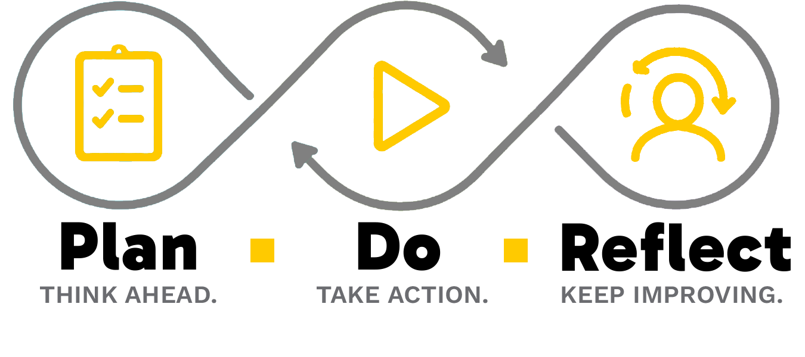

The design system in one place: voice, type, color, the reusable components established across the site, and every custom icon pulled verbatim from source so they're actually comparable. Not part of the site's nav or IA — a working doc for "does this fit," not a page for visitors. Switch the theme swatch at the bottom to check any of this across style directions.
Design Brief
The brief this whole system is built to satisfy, given directly and worth preserving verbatim intent.
"Executive whimsical" — serious but fun, approachable but authoritative.
Explicitly rejected as too sterile for this site: Masterclass, HBR, TED, FranklinCovey. The hand-drawn icons, Doodle Notes, and playful color pop exist specifically to avoid that register — but the content underneath still has to hold up like a real reference, not a novelty. Sans-serif only, no exceptions, in every one of the three style directions.
Favicon Ideas
Four candidate marks for the browser-tab favicon — each shown large and at actual 16px (rendered live at that size, not a scaled screenshot) so legibility at real size is part of the comparison, not an afterthought. None chosen yet.
16px
Loop Arrow
A single circular arrow — nods at the repeating Plan → Do → Reflect cycle directly. Currently shipped as favicon.svg.
clear at 16px
16px
Three-Way Split
The ring divided into three equal arcs, one per stage — the most literal "Plan / Do / Reflect" reading of the three. The gaps between arcs mostly vanish at 16px, so it reads as a plain gold-topped ring at real size rather than three distinct parts.
softens at 16px
16px
Bullseye
Reuses the site's own SMART-goal concentric-circle icon (see Icons below) rather than inventing a new mark. The boldest and most legible of the four at true favicon size — but reads as "goal," not "cycle."
clearest at 16px
16px
Sprout
Two leaves branching from one stem — a growth metaphor instead of a cycle one, tying to the homepage's "reflection is what turns effort into growth" line rather than the Plan-Do-Reflect loop itself.
reads at 16px
Logo Concepts
The final mark — a complete PNG built in Photoshop, icon and wordmark and taglines all in one file. Earlier hand-drawn SVG exploration (four concepts, working through shape and color direction before landing here) has been removed; see notes.html for that history if it's ever useful again.

Final Asset — complete, built in Photoshop
Wordmark and taglines are baked into the image now (Gabarito, installed properly rather than substituted) — no separate HTML text layer on top of it anymore. Solves the centering problem the grid-column approach was papering over: everything is positioned once, by hand, in the file itself.
Still a transparent-background PNG, so it drops cleanly onto any card or nav background regardless of theme — just no longer theme-adaptive text, since the words are pixels now, not live type.
This is the mark going forward.
Nav Mockup
The real top nav markup at actual size, not an isolated swatch, so color and type choices can be judged in context. Switch the theme swatch at the bottom to compare directions.
.topnav, .topnav-items, .item — used site-wide. Wrapped in .lib-nav-mock here only, to sit as a contained card instead of full-bleed/sticky like the real header. Row 3's wider Core Skills gap shipped site-wide as .topnav-items .item:last-child. Row 2's gold .nav-mock-sep breadcrumb stays a page-local experiment, not adopted.
Voice & Tone
How the writing on this site talks, distilled from what's actually shipped rather than written in the abstract.
Direct and opinionated, not neutral
The site takes a stance instead of listing every option with equal weight. It's willing to say a common practice is overkill, or that a popular framework misses the point.
"Most projects don't need a five-lens enterprise risk framework" — cut on sight once it read as hedging.
Concrete over abstract
Every framework earns a worked example, not just a definition — a Sample Goal, a Sample Tenet, a filled-in RACI, a status report with real-looking numbers. Abstract descriptions get a body; nothing stays purely conceptual.
Push back, don't just validate
Every Try It prompt explicitly instructs the AI to challenge a vague or too-easy answer instead of accepting whatever the user types first.
"Push back if any of my answers are too vague." / "…don't round a flag up to Green just because I'd rather it looked that way."
Self-contained, never "as discussed above"
A Try It prompt, a paragraph, a doodle note — each should make sense on its own, copied out of context. No "if I have the earlier section, I'll paste it in": ask for what's needed directly instead of assuming the reader has the rest of the page.
Honest over polished
Where the content deals with status/communication, the throughline is that an honest red flag beats a comfortable green one. That bias toward honesty over spin runs through the writing generally, not just the Status Report section.
"Bad news isn't wine. It doesn't improve with age." — Colin Powell
Epistemic humility on frameworks
Frameworks are offered as a default, not a law — the site explicitly invites a better answer over its own suggestion where one exists.
"Sample Tenets (unless you know better ones)"
No corporate-speak
No "synergy," no "leverage" as a verb, no "circle back," no "let's dive in!" chirpiness. Jargon that is used (Epic, DACI, tracer bullet) gets defined in plain language the first time it appears, inline, not assumed.
Typography
Two working fonts per theme, plus one narrow-purpose third font. Nothing else.
Heading --font-heading
The quick brown fox
Body --font-body
The quick brown fox
Handwriting --font-hand
The quick brown fox
Fonts & text colors by theme
The samples above update live with whichever theme is active. This table doesn't — it's the concrete reference, all three themes side by side.
A — Kinetic SignalSoraWork Sans#111215#45464a#6b6c70
B — Studio LedgerSpace GroteskWork Sans#33302d#33302d#6b6460
C — Bright MarginSoraPlus Jakarta Sans#111214#45464a#6b6c70
--font-hand (Patrick Hand) is fixed at :root and doesn't vary by theme — same handwriting font across all three directions.
No serif fonts, anywhere, no exceptions — explicit, non-negotiable brief requirement.
--font-hand is for short standalone labels only — a Doodle Note title, an annotation tag — never for full sentences or body copy. Established after direct feedback that handwriting applied to real content "was doing too much work" and became harder to read, not more charming.
Color & Theme System
Three interchangeable style directions, switchable live from the swatch control on every page. No style direction has been chosen as final yet.
A — Kinetic Signal
Gray / black / bright yellow. Sora + Work Sans. The default direction — highest contrast, most graphic.
B — Studio Ledger
Dusty rose / gray / white. Space Grotesk + Work Sans. Softest, most editorial of the three.
C — Bright Margin
White / gray / lime. Sora + Plus Jakarta Sans. Sharpest, most tech-forward of the three.
Every page reads colors and fonts from tokens.css custom properties — never a hardcoded hex value or font name in main.css or page markup. The only documented exceptions are .theme-switch (has to show all three swatches regardless of which is active) and this page's own theme-comparison cards, for the same reason.
One set of colors sits outside the theme system on purpose: Red/Amber/Green status. Green means on-track, Amber means at-risk, Red means off-track — that convention doesn't change with the brand direction, so these three are defined once in :root instead of redefined per theme.
--status-green
--status-amber
--status-red
Components
Named, reusable patterns established over the course of building the site — reach for these instead of inventing a new one-off treatment.
Doodle Note
One or more small hand-drawn icons paired with regular-weight body text, inside a single continuous gold left border. The icon + border carry the "playful" character — the text itself stays in the normal body font. Established after direct feedback that applying the handwriting font to full sentences was "doing too much work."
Sample Goal
Reduce invoice approval cycle time from 10 days to 4 days within 90 days.
A real, verifiable book or source quote, set off with a gold left border. Reserved for actual citations, not invented lines — every one links out to the book on the References page.
"Bad news isn't wine. It doesn't improve with age."
— Colin Powell, It Worked for Me: In Life and Leadership
.pull-quote — used site-wide
Example Box
A dashed border deliberately distinguishes a worked example from a solid-border structural card — this is a sample to look at, not a step to follow.
Example — Launching a New Product
R: Product Manager writes specs and coordinates development.
.example-box / .example-label — used site-wide
Example Box multi-item list
When one .li-example box needs to cite more than one example, list them as gold-dot bullets inside the box (a <ul>) rather than running them together in a semicolon-joined sentence, or splitting into separate gray boxes — too heavy inside a compact card. Opt-in: only kicks in when the content is a <ul>, so a plain-text .li-example citation elsewhere is unaffected. Established on strategic-planning.html's Strategic Theme cards (each core driver cites 2 companies) and its "Other" row (3 labeled sub-themes).
First example, cited on its own line.
Second example, same box.
.li-example ul / .li-example li — strategic-planning.html
Accordion + Try It
For content-dense pages, each framework is a collapsible .framework-item.is-accordion section. A Try It prompt nests inside as its own independent toggle, collapsed regardless of the parent section's open state. Every Try It prompt must stand alone — see Voice & Tone above — so it's still useful pasted anywhere, with no reference back to this page.
A small solid circle in Green/Amber/Red, always paired with a text label — never color alone. Used for Health Summary indicators (Project Health, Health Trend, Scope/Schedule/Budget) on the Status Report mockup.
Project HealthAmber
Health TrendImproving
.rag-dot — project-program-management.html
Back to Top
A subtle end-of-section link — gray "Top" text with a small accent-colored up arrow — so a long collapsible section doesn't force a manual scroll back to its own heading.
A grid of icon-led cards, one per concept — turns a flat bulleted list of "N related but distinct things" into something worth looking at. Two uses so far: MVV's 3 cards each get their own --mvv-color (tints the top border + icon, and the worked-example dots below reuse the same three so they tie back to the definitions); Strategic Theme's 4 core value drivers are coequal options in a flat taxonomy, not a sequence, so all 4 share one color instead of inventing arbitrary distinctions. Default grid-template-columns is a fixed 3-up; add .is-four for a fixed 4-up, .is-two for a fixed 2-up (cards carrying enough text — a description plus a .mvv-card-footer — that 3+ across reads cramped, e.g. Goleman's Six on leadership-styles.html), or .is-auto for any other count — it packs as many 180px+ columns as fit instead of wrapping to an uneven last row. Use a class, not an inline style, for this: an inline grid-template-columns outranks the mobile collapse rule below and never actually flexes down to one column. A 5th item that's a catch-all/outlier rather than a true peer (Strategic Theme's "Other") doesn't belong in the grid at all — add it after as a standalone .mvv-card.is-wide instead: same card, laid out as icon / heading+body / worked-example in a horizontal row (stacks on mobile), so it reads as "the exception" rather than silently becoming a 5th grid card. A card that needs a short labeled fact or two beyond its own description (e.g. "Best when" / "Watch for" on leadership-styles.html) gets a .mvv-card-footer — one or two lines set off with a dashed rule, not more body copy. --mvv-color is usually var(--accent-strong)/var(--accent-gold), but when the content's own vocabulary IS a set of colors (team-building.html's Red/Yellow/Green/Blue personality grid) it's fine to point --mvv-color at the fixed var(--status-red)/var(--status-amber)/var(--status-green)/var(--status-blue) tokens instead — those colors are the content, not decoration, so they should read the same regardless of theme. Grid collapses to a single column under 720px.
Vision
Values
Other
The outlier, laid out horizontally instead of stacking as a grid card.
.mvv-grid (.is-four / .is-auto) / .mvv-card (.is-wide) — vision-mission.html, strategic-planning.html (Strategic Theme). Worked examples on vision-mission.html use the parallel .mvv-example-grid / .mvv-example-card / .mvv-example-row / .mvv-example-dot.
Matrix Diagram
A 2x2 grid with real row/column axis labels — built for the Eisenhower Matrix, but generic to any 2x2 framework. .m-primary/.m-secondary/.m-muted grade the four cells from most to least important by background weight rather than all four looking equal. Real text in a CSS grid, not an image, so it themes automatically with no per-theme variants needed. Narrower axis-label column under 720px.
A plus-shaped 5-cell grid — one center cell plus four around it — for any "four things act on one central thing" framework. Built for Porter's Five Forces specifically but the shape is generic: swap the five labels for any other 4-around-1 structure. The four outer cells share one accent-colored background (var(--accent), same "colored card" treatment as .matrix-diagram's .m-primary) since they're coequal forces; the center cell stays var(--accent-strong) to read as the one thing being acted on. A .ff-cell-icon svg above the heading is optional — add it per cell, colored var(--accent-strong) for the outer cells and var(--bg-content) for the center. Real text in a CSS grid, not an image, same approach as the Matrix Diagram above. Collapses to a single stacked column under 640px.
Opt-in modifier on .stage-box-item: add class="has-icon" and wrap the existing h3+p in a .stage-box-item-body, with a .stage-box-item-icon svg before it. Opt-in on purpose — .stage-box-item is reused on team.html, self-management.html, core-skills.html, and leadership.html, and none of those pages get icons unless they add this markup themselves.
A short, named sequence — each item a circular accent badge (number, dot, or icon) plus a label and description. Bare by default (no card/border, for use inside a section that already has its own); add the .is-cards modifier to wrap each item in its own bordered card AND cap the whole list to 640px, so a cascade of worked-example-heavy items reads as distinct units and never stretches wider than the surrounding prose just because its container has more room (established after strategic-planning.html's Strategic Choice Cascade, inside a 960px-wide page, visibly out-stretched the 640px Formulate/Measure text above and below it). Opt-in modifier, not a change to the base class — okrs.html's plain numbered list (no cards) is unaffected.
Every custom inline-SVG icon currently in use across the site, pulled verbatim from source, at a consistent size so they're actually comparable — a working doc for the "are these all equally playful?" question.
Goal / target icons
Three separate places draw the same "concentric circles" bullseye. Consistent with each other, but flat/geometric — the least hand-drawn shape in the set.
S is deliberately not repeated here — it's the same bullseye already shown above in "Goal / target icons." These four read as generic dashboard/UI icons (bar chart, checkmark badge) rather than illustrated concepts — the weakest match to the "playful" bar the rest of the set sets.
M (Measurable)
set-goals.html
generic UI icon
A (Achievable)
set-goals.html
has some character
R (Relevant)
set-goals.html
generic UI icon
T (Time-bound)
set-goals.html
generic UI icon
Time & boundaries icons
Hand-friendly line weight, rounded caps, no fill blocks — this trio plus the 2-Minute clock are the most consistent "playful sketch" family on the site.
After Hours (clock)
time-management.html
playful / sketch
New Requests (inbox)
time-management.html
playful / sketch
Capacity (gauge)
time-management.html
playful / sketch
2-Minute Rule clock
time-management.html
playful / sketch
Fully illustrated icons
The two most "drawn" pieces on the site — filled organic shapes rather than line icons. This is the high end of the playfulness range; nothing else on the site has this much personality yet.
Pomodoro tomato
time-management.html
most illustrated
Doodle Note heart (MLP)
project-program-management.html
hand-drawn
Reflection / callout icon
Small, clean, rounded — reads more "functional" than "playful," but it's used at small size inside dense callout boxes, so the plainness is probably fine there.
"Carry forward" arrow
reflection-practice.html (×4)
functional, low character
Vision & Mission concept icons
The three MVV cards on vision-mission.html. Color is tied to the concept, not the page — --accent for Vision (filled North Star), --accent-strong for Mission (stroked compass with a filled needle), --accent-gold for Values (stroked shield with a check) — so reuse the shape+color pair together wherever Vision/Mission/Values needs an icon, not just the shape.
Vision — North Star
vision-mission.html
playful / bold
Mission — Compass
vision-mission.html
playful / sketch
Values — Shield
vision-mission.html
playful / sketch
Company example marks (shaded gold)
The Apple/Patagonia/LEGO worked examples on vision-mission.html, all recolored to --accent-gold. Apple's is the real mark (MIT-licensed, via the Simple Icons project — built for exactly this kind of reference use). Patagonia and LEGO have no open-licensed vector available anywhere, so those two are generic concept icons (a mountain, an interlocking brick) rather than a hand-reconstruction of their actual trademarks.
Apple (real mark)
vision-mission.html
Patagonia (generic mountain)
vision-mission.html
LEGO (generic brick)
vision-mission.html
Organization stage-item icons
One icon per Plan/Do/Reflect item on organization.html, added via the Icon List Item component (see Components above). All seven share one color — var(--text-heading) — rather than the per-stage --stage-plan/--stage-do tokens: --stage-reflect in particular is a near-white gray in two of the three themes and nearly invisible on a white card, so the whole set was kept to one reliably-readable color instead of splitting by stage.
Strategic Planning — folded map
organization.html
playful / sketch
OKRs — target + arrow
organization.html
playful / sketch
Annual Operating Plan — calendar
organization.html
playful / sketch
Program Increment Cadence — stopwatch
organization.html
playful / sketch
Agile Release Trains — train
organization.html
playful / literal
Roles & Responsibilities — two people
organization.html
playful / sketch
MBR & QBR — magnifying glass
organization.html
playful / sketch
Strategic Theme icons
The four core value-driver cards plus the standalone "Other" row on strategic-planning.html. All one color (--accent-strong) rather than per-card colors — these are coequal options in a flat taxonomy, not a sequence or hierarchy like MVV, so there's no principled way to assign distinct colors per card. "Other" is laid out with .mvv-card.is-wide specifically because it isn't a peer of the four — see Concept Card Grid in Components above.
Grow Revenue — ascending bars
strategic-planning.html
flat / geometric
Reduce Cost — money bag
strategic-planning.html
playful / sketch
Reduce Risk — padlock
strategic-planning.html
playful / sketch
Improve Customer Experience — heart
strategic-planning.html
playful / sketch
Other — lightbulb
strategic-planning.html
playful / sketch
Five Forces icons
The five cells of the Forces Diagram on strategic-planning.html. The four outer forces are var(--accent-strong) on their shared yellow cells; Rivalry's crossed swords sit in the dark center cell and are drawn larger (26px vs 20px) with bolder strokes — at icon size, thinner crossed lines read as a plain X rather than swords, so the center icon gets more room and weight to stay legible.
Threat of New Entrants — door
strategic-planning.html
playful / sketch
Supplier Power — dumbbell
strategic-planning.html
flat / geometric
Rivalry — crossed swords
strategic-planning.html
playful / sketch
Buyer Power — shopping cart
strategic-planning.html
playful / sketch
Threat of Substitutes — swap arrows
strategic-planning.html
flat / geometric
Strategic Choice Cascade icons
The five num-badge circles on strategic-planning.html's P&G/Olay cascade — the plain .is-dot bullet became a concept icon instead, reusing the base .num-badge circle (already accent-colored, built for literal numbers elsewhere like okrs.html) rather than a new component. Core Capabilities reuses the exact gear icon freed up when Reduce Cost became a money bag (see Strategic Theme icons above) — same concept, "the internal machinery," fits both.
Winning Aspiration — trophy
strategic-planning.html
playful / sketch
Where to Play — map pin
strategic-planning.html
playful / sketch
How to Win — flag
strategic-planning.html
flat / geometric
Core Capabilities — gear
strategic-planning.html
playful / sketch
Management Systems — gauge
strategic-planning.html
playful / sketch
UI chrome (not content icons — for reference only)
These aren't "concept" icons, they're interface elements. Included for completeness, not part of the playfulness question.